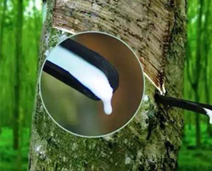
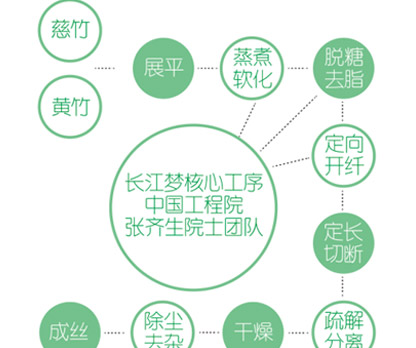
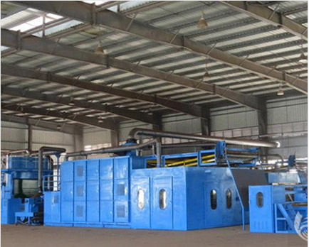

竹纤维床垫专家
Yangtze River DREAM SLEEP
竹原纤维
竹原纤维又称为原生态纤维，取云贵川境内天然生长、竹龄2-4年的慈竹、黄竹为 原料，通过加热软化并利用定向开纤方法提取出来的纤维。 竹原纤维是以物理机械和生 化工艺，自然获取束状、丝状或絮状竹纤维单元，包含竹子的单根纤维细胞或多个纤维 细胞集合体，其竹质的天然物理性和生化特性得到有效保持，因其特性和品质与黏胶竹 纤维（再生纤维）有很大区别，是真正意义上的天然竹原纤维。
竹纤维能把保暖、透气、排湿性能有机在集于一身，与皮肤一样具有毛细血管的特 殊功能，是纤维中的姣姣者，亲肤性好，对人体健康有益。
- 抗菌，抑菌，除臭，天然环保。
- 防腐防霉防蛀
- 抗紫外线防静电
- 吸震隔震防噪音
- 冬暖夏凉，舒适透气
- 吸湿、排湿、透气，有效调节室内和床垫水分平衡
长江梦的特殊工艺
植物纤维材料生虫的机理，是本身含有的营养物质（内因），如糖分、脂肪、蛋白质等碳水化合物，在温度环境和细菌（外因）的共同作用下发生的。丛竹子到竹原纤维，需要专业的脱糖去脂，并且这是一项专利技术是竹原纤维特有的。
天然乳胶割取于天然橡胶树，呈奶状乳白色，是较为珍贵的天然原料，一般用于制作高贵的乳胶制品天然乳胶性能好，粘接性强，弹性十足，抗老化期长远优于一般化工合成胶类品种。用天然乳胶作为粘接剂制作长江梦床垫芯材。
天然乳胶割取于天然橡胶树，呈奶状乳白色，是较为珍贵的天然原料，一般用于制作高贵的乳胶制品天然乳胶性能好，粘接性强，弹性十足，抗老化期长远优于一般化工合成胶类品种。用天然乳胶作为粘接剂制作长江梦床垫芯材。
